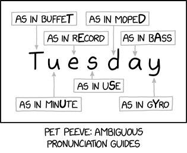
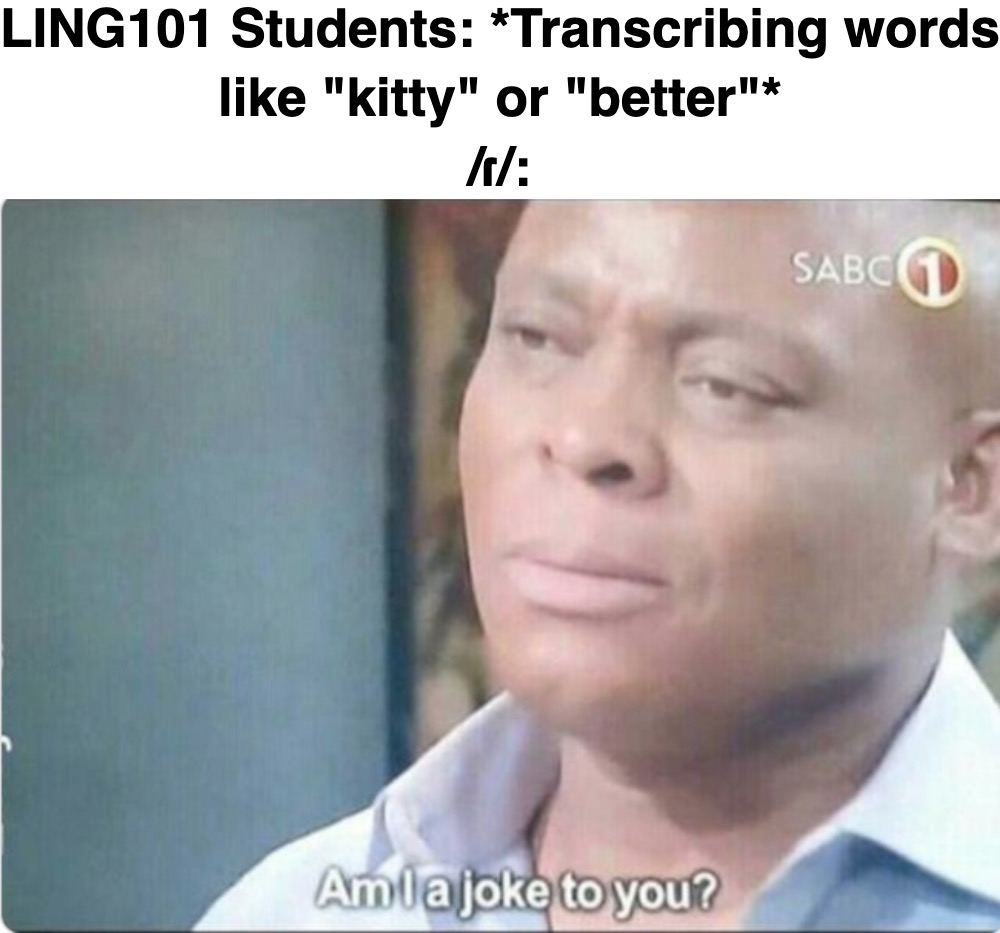
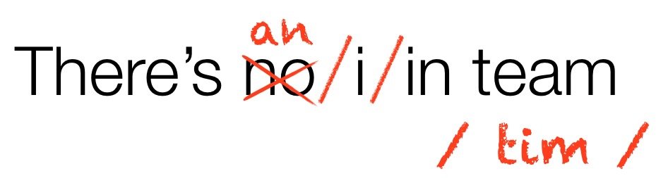
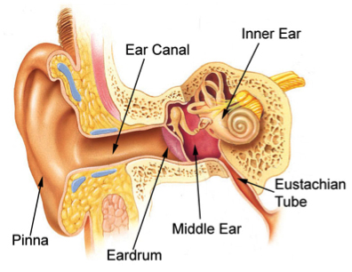

/d͡ʒɪf/
/gɪf/
/jɪf/
/d͡ʒi aj ɛf/
/d͡ʒejpɛg/
/gɪf/
/jɪf/
/d͡ʒi aj ɛf/
/d͡ʒejpɛg/
More on IPA Transcription
Why are we learning some IPA, anyways?
Some phonetic phun
We can identify the proper symbols in the IPA
We can start to transcribe speech using the IPA
http://www.internationalphoneticalphabet.org/ipa-sounds/ipa-chart-with-sounds/
We also have videos at https://savethevowels.org/ipa
Make sure the sounds you’re using are on your quick reference sheet!
As is memorizing some words for each symbol and then process-of-eliminating
1
2
3
4
1337
/θɪkɪnd/
θ - interdental
k - velar
n - alveolar
d - alveolar
1
2
3
4
Probably still not 1337
θ - fricative
k - stop
n - nasal
d - stop
1
2
3
4
1337 is still not the answer
θ - voiceless
k - voiceless
n - voiced
d - voiced
The letter “C”
“ng” is usually /ŋ/, as in “ring” /ɹɪŋ/
“th” can be /θ/ or /ð/
“x” is usually /ks/, as in axis /æksɪs/
English does not allow double (‘geminate’) consonants
Sliced - /slaɪst/
Buzzed - /bʌzd/
Close (near) - /klows/
Close (a door) - /klowz/

(Image Credit: XKCD 2819)

Words like ‘cotton’ or ‘people’ or ‘bull’ can have a final consonant which feels ‘alone’
We refer to these as ‘syllabic consonants’
You can use /ən əl/ to represent that, or the IPA ‘syllabic’ diacritic (l̩ or n̩)
So ‘cotton people bull’ = /kɑʔən pipəl bəl/ or /kɑʔn̩ pipl̩ bl̩/
Note that for many, ‘bull’ is still /bʊl/
It’s good habit to write /t͡ʃ/ and /d͡ʒ/ with the tie bar when they’re affricates
It’s less critical for English, but it’s good practice

You’re always transcribing somebody else saying them
There is no such thing as an automatic IPA “translator”, and there never could be
Some dictionaries give you IPA, but badly
… and we can totally tell if you used that
/y/ : High front rounded vowel
/j/: Voiced palatal approximant (as in ‘Yes’)
/r/: Voiced alveolar trill (the Spanish ‘rolled R’)
/ɹ/: English ‘r’ sound (as in ‘red’)
… by this point, you’re likely wondering…
It makes you think about how you talk and what you’re saying
It prepares you for future linguistics classes which will use it
You can work for an airport announcing names!
“They thoroughly and roughly wrought the boughs in the borough, through and through”
/ðej θəɹəli n̩ ɹʌfli ɹɑt ðə bɑwz ɪn ðə bəɹow θɹu n̩ θɹu/
/əˈlumɪnəm/ vs. /aljuˈmɪnium/
/ɡəˈɹɑʒ/ vs. /ˈɡɛɹɑʒ/
“Sell your iron to Walter Zion”
/sɛl jəɹ ajəɹn tə wɑltəɹ zajən/
/sɛl jə ajən tə wɑltə zajən/
park the car in harvard yard
/pɑɹk ðə kɑɹ ɪn hɑɹvəɹd jɑɹd/
/pɑ:k ðə kɑ: ɪn hɑvəd jɑ:d/
“I said a hip, hop, the hibbie, the hibbie to the hip hip hop and you don’t stop the rocking to the bang bang boogie say up jump the boogie to the rhythm of the boogie the beat”
[ɑsɛdə hɪp hɑp ðəhɪbi ðe hɪbi təðə hɪp hɪp hɑpʰɑjɨ down stɑp ðə ɹɑkɪn tʰəðə bejŋ bejŋ bʊɡi seɪ ʔʌp d͡ʒʌmp ðə bʊɡi tʰəðə ɹɪðm ʌ ðʌ bʊɡidə bit]
[a.sɛ.ɾa.he.ha.hə.he.ehɛ.βe.tu.ða.hɛ.ðe.ðe.se.vi.ju.no. ma.ma.ha.vi.æn.ðə.bu.ɣi.æn.ðə.bʷi.li.li.bi]
From ‘The Ketchup Song’ by Las Ketchup
[owaʔaʔaʔaʔ]
From Disturbed’s ‘Down with the Sickness’


Clicks are used extensively in Khoisan languages
They’ve also been borrowed into Zulu and Xhosa, both Bantu languages (within Niger-congo)
This means that only ~1% of Africans speak a language where there are clicks
All of these languages have lots of non-click sounds!
Original Source: ‘Khoisan Click Language’ by Xurxo Mariño

There is not a meaningful difference between your vocal tract and a San speaker’s
The only meaningful difference between humans is practice!
It’s easier if you learn the language at a younger age
There are no sounds English speakers “just can’t produce”, with practice.
Make a Voiceless Velar Fricative /x/ (as in “Chanukkah”, “Challah”, “Bach”)
Make a voiced alveolar trill /r/ (the Spanish Rolled R)
Make a voiceless palatal fricative (ç) (as in an angry cat)
Make a voiceless alveolar lateral fricative (ɬ) (as in “nahuatl”)
Make a /!/ click between two vowels (/a!a/)
The IPA is a great resource
Do the interactive tutorial for HW1 to learn more about how it works
Remember, you’re writing down what was actually said, and your writing system doesn’t help with that!
Today, I have abandoned good sense and tradition in favor of my own burning passions
“Screw it, I’m talking about speech perception!”
Speech is flapping bits of meat around in your head and throat while you expel air.




“Wait. You can’t do that. You skipped a step. Go back.”
You consistently hear word boundaries
You can pick out missing words from context
You know roughly what to expect
Let’s take you out of your comfort zones!
Original Source: ‘Debut on Frisian Television’ by Tsead Bruinja
Tony Beets from “Gold Rush”
We use our knowledge of the categories to make strong decisions about which sounds are which
bad |
ban |
|---|
bomb |
bob |
|---|
duck |
dunk |
|---|
bob |
bomb |
|---|

We pay attention to tiny details!
When we start preparing for the next sound before it even begins
Yes, that’s a clickable link to a PDF
Speaking of recovering huge amounts of information…
| ### Let’s listen to some sounds |
|---|
| ### Let’s listen to some sounds |
| ### Now let’s play all three at once! |
| ### Does this help? |
This is called “Sine wave speech”, and it’s really awesome.
Changes in pitch during the word change the meaning of the word
“High” vs. “Low” (sometimes “mid” or “rising/falling”)
| Yesterday - “bi” |
| Wound - “bi” |
A - “Yesterday”
B - “Wound”
Pitch patterns change meaning
‘mother bother horse scold QUESTION’
We may be taking acoustics and processing it to build a model of the world
Then using that model to understand what’s happening in the other person’s head
Which then tells you the phones being produced
She’s 28 years old from Monrovia, Liberia
She also speaks Liberian Pidgin English
You’ve never seen her face, never conducted a conversation
… and you still understood her.
You’ve probably never heard anybody with a Liberian Pidgin English accent
You’ve probably never even heard anybody from Liberia
You had no way of seeing her to judge how large or small her vocal tract was
You couldn’t rely on gestures or facial movements to help fill in blanks.
You had no context to know which words she would or wouldn’t say
This is a worst-case scenario for speech perception
… but you all didn’t care!
Every person sounds different
Sometimes due to language background or social status
Sometimes due to differences in anatomy
My vowel in “bet” might be acoustically the same as yours in “bit”
No two productions of the same word by the same person are identical
… and in fact…

And yet, nobody gives a damn.
“OK. Making speech is impossibly hard, and understanding speech is impossibly hard.”
… but that’s only because we’re really awesome.
We flap bits of meat around in our heads,
in precise, intricate patterns and series,
without thinking, “trying”, or running out of air,
while walking, running, biking, or eating,
…and still get the message across.
We’re able to pull signals out of the air,
parse them according to the rules in our minds,
take advantage of tiny details,
recover huge amounts of lost information,
and wade through mind-boggling variability
… all without even noticing you’re doing anything special.